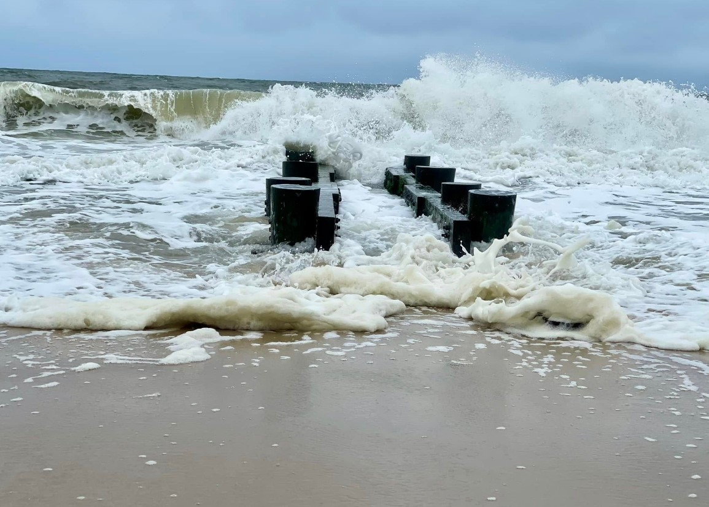

ABOUT
Purpose. This site delivers near-real-time predictions of total water levels and beach/dune profile change for representative Atlantic-coast sites. The initial focus is the Delaware coast (live), with Duck, North Carolina planned next. The goal is a transparent, repeatable workflow that supports research and situational awareness.
Approach. We use the open-source XBeach model in 1D transect mode. Forcing is assembled automatically every 4 hours from public data services: wave height, period, and mean direction from NDBC Buoy 44084, and water level from NOAA CO-OPS Station 8557380 (Lewes, NAVD). For each run, 39 cross-shore profiles are simulated and compared to their initial surveyed lines.
Outputs. Each transect produces an image showing the modeled final profile versus the initial profile, together with run metadata (Hm0, Tp, wave direction, and mean water level). Images are published to the map as clickable markers, and a GeoJSON file (latest_run.geojson) is updated so the site always shows the latest cycle.
Why this matters. A lightweight, automated pipeline allows frequent updates with minimal operator effort, enabling rapid exploration of conditions and sensitivity at many coastal transects. The methods and code are deliberately simple and open, making it easier to maintain and extend to new locations.
Limitations. These results are research products. They depend on the availability and quality of upstream data and the assumptions in the current model setup. Profiles that fail to compute or lack output are skipped in a given cycle. Results should not be interpreted as an official forecast.